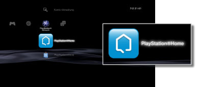

PlayStation®Network > Übersicht über PlayStation®Home
Übersicht über PlayStation®Home
PlayStation®Home ist eine Community für 3D-Spiele auf PlayStation®Network, in der sich Benutzer von PS3™-Systemen treffen und mit anderen Benutzern von PS3™-Systemen chatten können. Für diese Funktionen müssen Sie ein PlayStation®Network-Konto erstellen (sich anmelden). Einzelheiten zur Verwendung von PlayStation®Home finden Sie auf der SCE-Website für Ihre Region.
Starten von PlayStation®Home
Sie müssen die Anwendung PlayStation®Home herunterladen und installieren, bevor Sie PlayStation®Home verwenden können. Wählen Sie  (PlayStation®Home) unter
(PlayStation®Home) unter  (PlayStation®Network), um die Anwendung herunterzuladen. Gehen Sie zum Abschließen der Installation nach den Anweisungen auf dem Bildschirm vor.
(PlayStation®Network), um die Anwendung herunterzuladen. Gehen Sie zum Abschließen der Installation nach den Anweisungen auf dem Bildschirm vor.

Anmerkungen
- Zum Installieren von PlayStation®Home sind mindestens 3 GB freier Speicherplatz auf der Festplatte des PS3™-Systems erforderlich.
- (PlayStation®Home) steht nur in bestimmten Regionen und Sprachen zur Verfügung. Welche Inhalte in (PlayStation®Home) erhältlich sind, hängt vom Land bzw. der Region ab, in dem bzw. der der Benutzer wohnt. Weitere Informationen dazu erhalten Sie beim technischen Support für Ihre Region.
Beenden von PlayStation®Home
Zum Beenden von PlayStation®Home drücken Sie die PS-Taste am Wireless-Controller und wählen dann  (Beenden) unter (PlayStation®Network).
(Beenden) unter (PlayStation®Network).
Löschen von PlayStation®Home
Sie können die Anwendung PlayStation®Home von der Festplatte löschen. Wählen Sie (PlayStation®Home) unter (PlayStation®Network), drücken Sie die  -Taste und wählen Sie [Löschen] aus dem Menü „Optionen“.
-Taste und wählen Sie [Löschen] aus dem Menü „Optionen“.
Anmerkung
Nach dem Löschen der Anwendung wird das Icon für (PlayStation®Home) nach wie vor im XMB™-Menü angezeigt. Wenn Sie das Icon auswählen, wird PlayStation®Home erneut heruntergeladen.